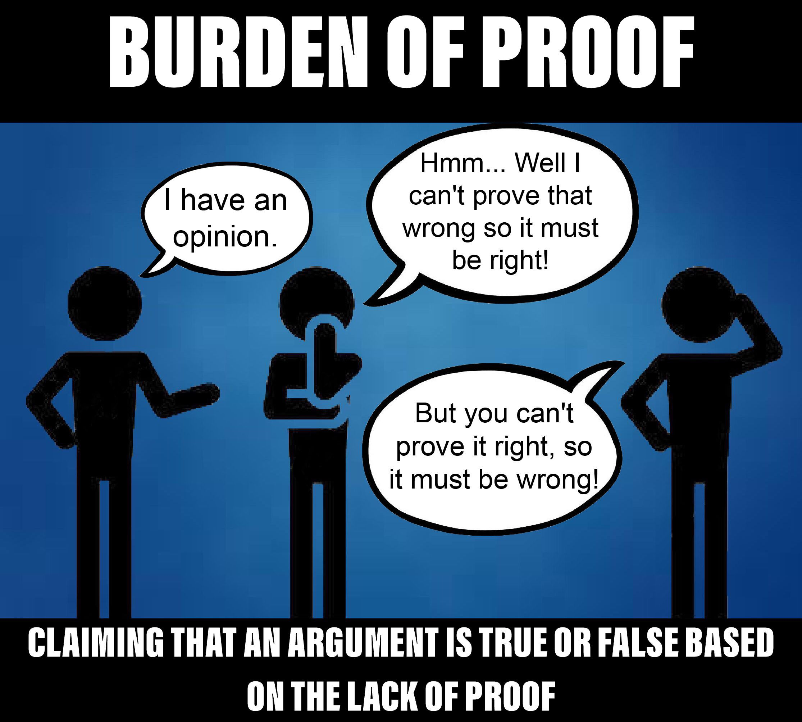
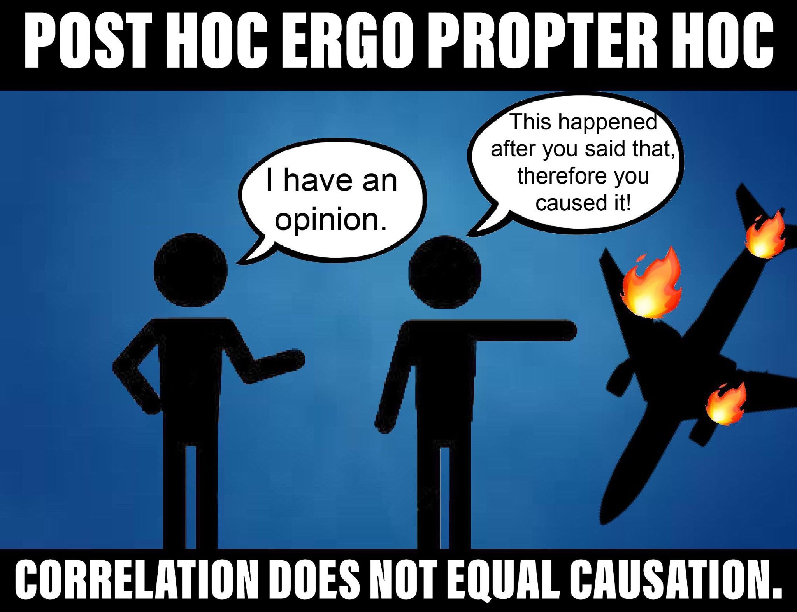
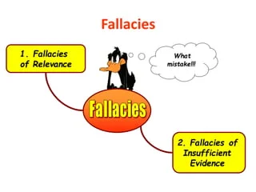
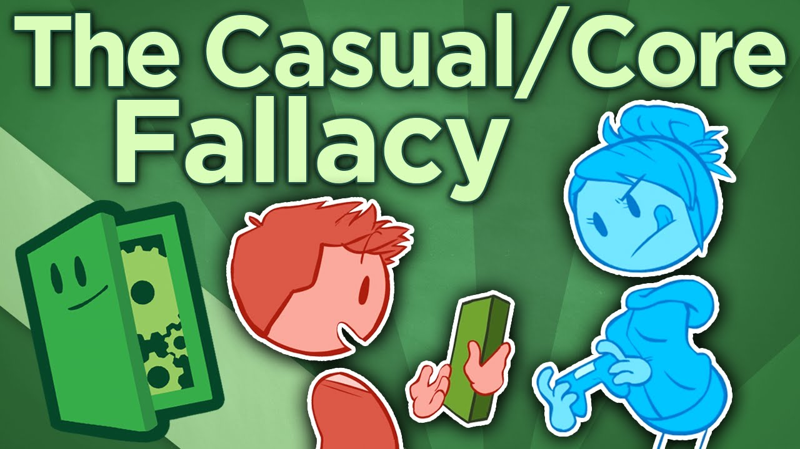
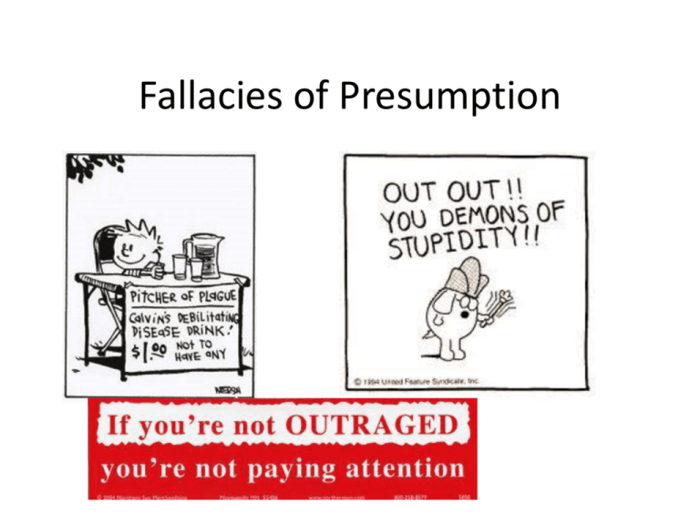

| HOME | SIGN UP | THE FALLACIES | OUR PURPOSE |
|---|
| HOME | SIGN UP | THE FALLACIES | OUR PURPOSE |
|---|
These fallacies occur due to errors in the logical structure of an argument. They are typically identified through a close examination of the argument's form. Examples include:
|
 |
Informal fallacies are more common and rely on flaws in the content or context of an argument. They often involve issues with the premises, evidence, or reasoning. Common informal fallacies include:
|
 |
These fallacies involve errors related to quantifiers, such as "all," "some," "none," and "always." Examples include the Fallacy of Composition and the Fallacy of Division, which incorrectly assume that properties of parts or wholes apply to the whole or parts |
These fallacies involve introducing irrelevant information or arguments into a discussion. Common examples are the Red Herring and the Fallacy of Composition/Division. |
 |
These fallacies involve errors in establishing causal relationships between events. Examples include the Post Hoc Fallacy and the False Cause Fallacy. |
 |
These fallacies occur when an argument relies on unjustified or false presumptions, such as the Begging the Question Fallacy and the Complex Question Fallacy. |
 |
Understanding these types of fallacies can help individuals recognize and avoid faulty reasoning in arguments and critical thinking.